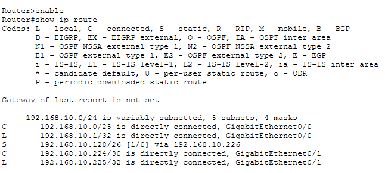
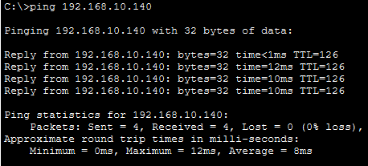

Static routing is the unglamorous half of network engineering. Dynamic protocols get the attention because they scale, but a two-site corporate topology doesn't need OSPF — it needs deterministic, auditable paths that an analyst can read in a route table without guessing what a protocol decided. Every static route is an explicit statement of intent, and that is exactly what a security-conscious deployment should contain.
This engagement builds on the VLSM address plan from the previous case study and adds the Layer-3 glue that makes it work: directional static routes between paired edge routers, a dedicated point-to-point WAN transport block carved out of the Class C range, and a troubleshooting narrative where an IP overlap initially black-holed cross-building traffic — and was diagnosed and resolved using standard Cisco IOS diagnostics.
All work was performed in Cisco Packet Tracer on the topology established in the VLSM engagement. The static routing patterns demonstrated here transfer directly to physical Cisco hardware and are still the correct choice for small-to-medium branch topologies, stub networks, and any deployment where the route table must remain human-readable.
Static Route Injection
With the VLSM plan already deployed, each router knows only about the subnets directly connected to its own interfaces. Traffic destined for a remote department's subnet has nowhere to go — the router has no entry in its table for that network, so it discards the packet. The fix is a static route: an explicit instruction that says "to reach network X, send the packet to next-hop Y."
On the HQ router, one static route is needed — a single entry that tells it how to reach the branch-side department. The next-hop address points at the far end of the WAN link, not at the destination subnet itself:
! HQ router — reach the branch /26 department
Router>enable
Router#configure terminal
Router(config)#ip route 192.168.10.128 255.255.255.192 192.168.10.226
Router(config)#exit
Three values are doing three distinct jobs in that one line. 192.168.10.128
is the destination network. 255.255.255.192 is the subnet mask telling the
router the size of that destination — a /26 in this case. And
192.168.10.226 is the next-hop address — the IP of the
remote router's WAN interface, not the IP of any host on the destination subnet. The router
doesn't need to know the destination host's address; it only needs to know which neighbour
to hand the packet to.
The mirrored route is configured on the branch router, pointing back toward the HQ side. Routing is inherently bidirectional — for any packet to reach its destination, both routers must know the path to each other's networks. A route that exists on only one side produces a diagnostic that's confusing at first glance: the ping request arrives successfully, but the reply never makes it home.
WAN Interface Hardening
The point-to-point link between the two routers is its own network — logically separate from any client subnet, because only two IPs are ever needed on it. Allocating a full /24, /25, or even /26 to a two-endpoint wire wastes addresses that could serve users. The correct allocation is the smallest possible block that still provides two usable host addresses: a /30.
A /30 mask leaves exactly 2 usable addresses after subtracting the network and broadcast
boundaries — perfect for a point-to-point link where each end is one of the two. The block
was carved from the unused tail of the Class C range, landing at
192.168.10.224/30:
! HQ router — WAN interface facing the branch router
Router(config)#interface GigabitEthernet0/1
Router(config-if)#ip address 192.168.10.225 255.255.255.252
Router(config-if)#no shutdown
Router(config-if)#exit
The 255.255.255.252 mask is the dotted-decimal form of /30. That single mask
tells the router that this interface's network spans 192.168.10.224 through
192.168.10.227 — the network address at .224, two usable host addresses at
.225 and .226, and the broadcast address at .227. Nothing else lives on this link, and
nothing else needs to.
RFC 3021 defines /31 as an alternative point-to-point allocation — zero
wasted addresses by using both available IPs as endpoints. In practice, most enterprise
deployments still standardise on /30 because it's universally supported
across Cisco IOS versions and interoperability with non-Cisco equipment is guaranteed.
The two wasted addresses per link are an acceptable trade for universal compatibility,
especially when the block is carved from an existing private range anyway.
Overlap Remediation
Before the /30 block was carved out, the initial configuration attempt placed the WAN link inside one of the client subnet ranges. From the router's perspective, this created an impossible situation: two interfaces claiming overlapping networks. When a packet arrived addressed to the overlapping range, the router had no way to determine which interface should carry it out — so the packet was silently discarded.
The symptom was classic and unmistakable. Pings from one building to the other returned Request Timed Out for every attempt, while local-subnet pings worked normally. This pattern — internal connectivity fine, external dead — is almost always a routing problem, and the first diagnostic to run is a route table inspection.
Router#show ip routeThe route table confirmed the diagnosis. The interface carrying the WAN link was reporting its network as directly connected on a range that overlapped the client subnet. The router's forwarding decision for that range was ambiguous — some entries pointed to the LAN interface and some to the WAN interface — and the ambiguity manifested as dropped packets.
The remediation was structural rather than corrective: the WAN link was
relocated entirely outside the client subnet space, into the unused tail
of the Class C range at 192.168.10.224/30. This removed the overlap at the
root, rather than trying to work around it with more specific routes. Once the /30 was in
place, cross-building traffic began flowing immediately — the same packets that had timed
out seconds earlier now returned replies without any further configuration change.
The instinct on a routing failure is to add more routes. The better move is to
inspect the existing table first — because a routing problem is usually
a routing overlap problem, and adding more routes to a broken table just moves
the ambiguity around. Reading show ip route carefully, noting every
interface's claimed network, and looking for ranges that intersect is the diagnostic
discipline that resolved this engagement.
Performance Outcomes & Verification
Two verification passes confirm the design behaves as intended — first a static analysis of the route table, then a live ICMP trace from one building to the other.
Route table inspection
The show ip route output confirms the address plan was deployed exactly as
designed. The table shows the VLSM segmentation in effect (5 subnets, 4 masks),
the local subnets marked as directly connected, and the static route to the remote /26
pointing at its next-hop address. The presence of the dedicated /30 on the
WAN interface proves the transport layer is isolated from every client network:

show ip route diagnostics confirming the
VLSM plan is active (5 subnets, 4 masks). The static route
S 192.168.10.128/26 [1/0] via 192.168.10.226 points to the branch /26
department, and the dedicated C 192.168.10.224/30 on
GigabitEthernet0/1 proves the WAN link is isolated from all client subnets.
Cross-building ICMP verification
The second pass traces a live packet from one building to a host on the remote subnet.
Four ICMP echoes are sent to 192.168.10.140 — an address inside the
192.168.10.128/26 branch subnet — and all four receive replies, with sub-15ms
round-trip times and zero packet loss:

192.168.10.140 on the branch subnet returns 4/4 replies with
0% packet loss, confirming the static route is delivering traffic
across the /30 WAN link in both directions. The TTL=126 values prove the
packets traversed the expected number of router hops end-to-end.
- Physical Layer-3 isolation constraints resolved. Multi-switch cascaded network blocks now pass traffic across buildings that were previously unreachable. The HQ and branch sides communicate bidirectionally, without any of the routing ambiguity that existed before the /30 relocation.
- Cross-building ICMP verification — 100% full-duplex. Every echo request received a matching reply, confirming that both the forward path (HQ → branch) and the reverse path (branch → HQ) are configured correctly. Asymmetric routing failures produce a distinctive pattern — requests arrive, replies time out — and this trace confirms that pattern is absent.
- 0% data packet loss. All four ICMP packets successfully traversed the WAN link in both directions and returned to the origin host. The sub-15ms round-trip times confirm there is no routing loop, no misconfigured mask on either side, and no silent packet discard at any hop.
- Deterministic, auditable route path. The route table reads as a complete statement of the network's forwarding behaviour. There are no dynamic protocol decisions to reverse-engineer, no route redistribution, and no hidden paths — a security posture that materially reduces the attack surface compared to a routing protocol deployment.
Inter-subnet transport confirmed operational. The static routing architecture delivers full-duplex connectivity between physically separate buildings, with every route explicitly declared and every path verifiable from a single command. This design pattern scales cleanly to additional branches — each new site adds one static route to each existing router, and the WAN transport block allocation repeats the same /30 discipline.
Security & Data Privacy Note
The configuration presented here reflects lab simulation only. Production deployments of static routing architectures typically layer additional controls on top of this design — default route failover via a floating static entry, IP SLA tracking to detect WAN link degradation, and administrative ACLs restricting which subnets may reach router management interfaces over the transport link. Those controls are documented as recommended next steps but are outside the scope of this lab exercise.